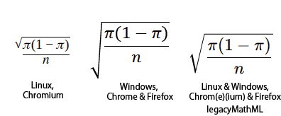

Math Configuration (v10.9.0+)
Mermaid supports rendering mathematical expressions through the KaTeX typesetter.
Usage
To render math within a diagram, surround the mathematical expression with the $$ delimiter.
Note that at the moment, the only supported diagrams are below:
Flowcharts
graph LR
A["$$x^2$$"] -->|"$$\sqrt{x+3}$$"| B("$$\frac{1}{2}$$")
A -->|"$$\overbrace{a+b+c}^{\text{note}}$$"| C("$$\pi r^2$$")
B --> D("$$x = \begin{cases} a &\text{if } b \\ c &\text{if } d \end{cases}$$")
C --> E("$$x(t)=c_1\begin{bmatrix}-\cos{t}+\sin{t}\\ 2\cos{t} \end{bmatrix}e^{2t}$$")
Sequence
sequenceDiagram
autonumber
participant 1 as $$\alpha$$
participant 2 as $$\beta$$
1->>2: Solve: $$\sqrt{2+2}$$
2-->>1: Answer: $$2$$
Note right of 2: $$\sqrt{2+2}=\sqrt{4}=2$$
Legacy Support
By default, MathML is used for rendering mathematical expressions. If you have users on unsupported browsers, legacyMathML can be set in the config to fall back to CSS rendering. Note that you must provide KaTeX's stylesheets on your own as they do not come bundled with Mermaid.
Example with legacy mode enabled (the latest version of KaTeX's stylesheet can be found on their docs):
<!doctype html>
<!-- KaTeX requires the use of the HTML5 doctype. Without it, KaTeX may not render properly -->
<html lang="en">
<head>
<!-- Please ensure the stylesheet's version matches with the KaTeX version in your package-lock -->
<link
rel="stylesheet"
href="https://cdn.jsdelivr.net/npm/katex@{version_number}/dist/katex.min.css"
integrity="sha384-{hash}"
crossorigin="anonymous"
/>
</head>
<body>
<script type="module">
import mermaid from './mermaid.esm.mjs';
mermaid.initialize({
legacyMathML: true,
});
</script>
</body>
</html>
Handling Rendering Differences
Due to differences between default fonts across operating systems and browser's MathML implementations, inconsistent results can be seen across platforms. If having consistent results are important, or the most optimal rendered results are desired, forceLegacyMathML can be enabled in the config.
This option will always use KaTeX's stylesheet instead of only when MathML is not supported (as with legacyMathML). Note that only forceLegacyMathML needs to be set.
If including KaTeX's stylesheet is not a concern, enabling this option is recommended to avoid scenarios where no MathML implementation within a browser provides the desired output (as seen below).
